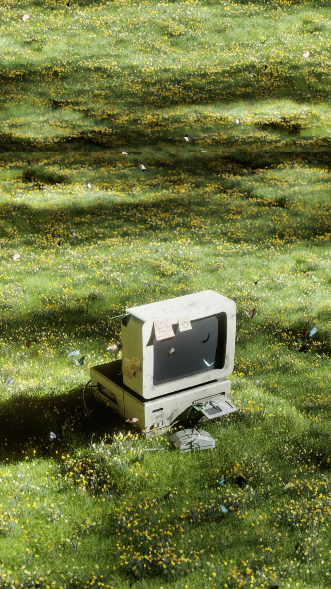
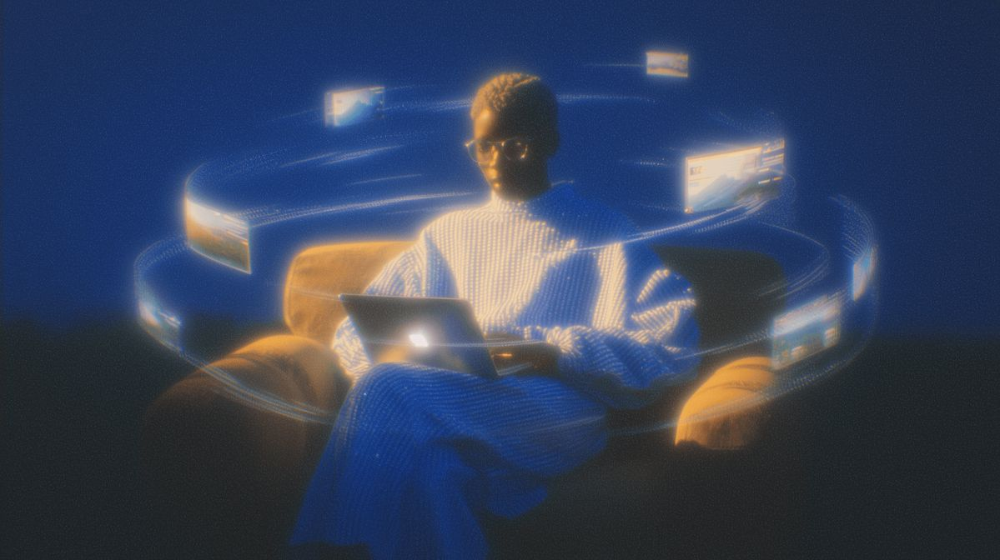
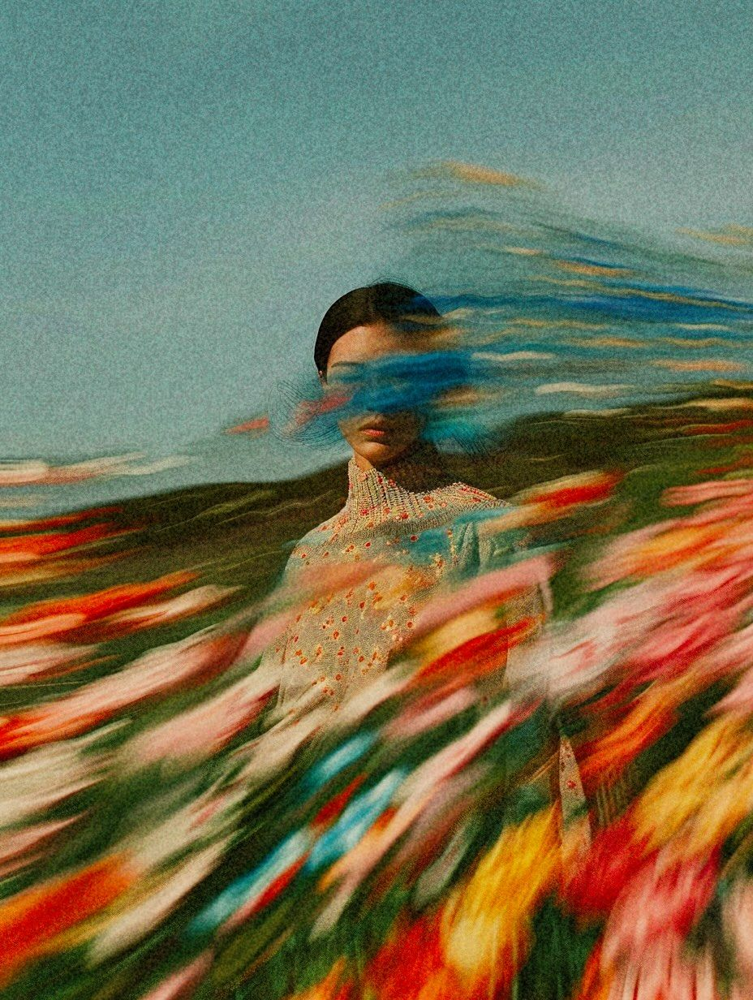
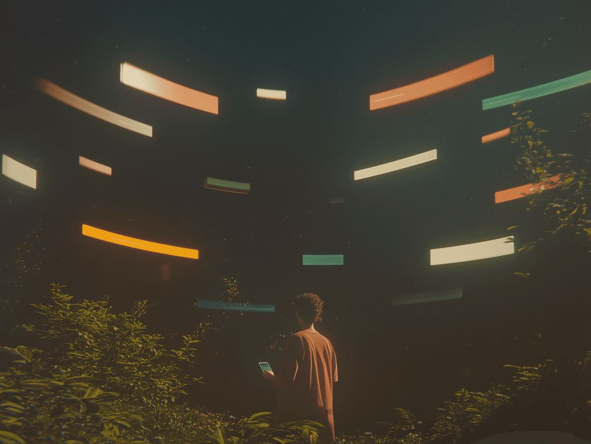
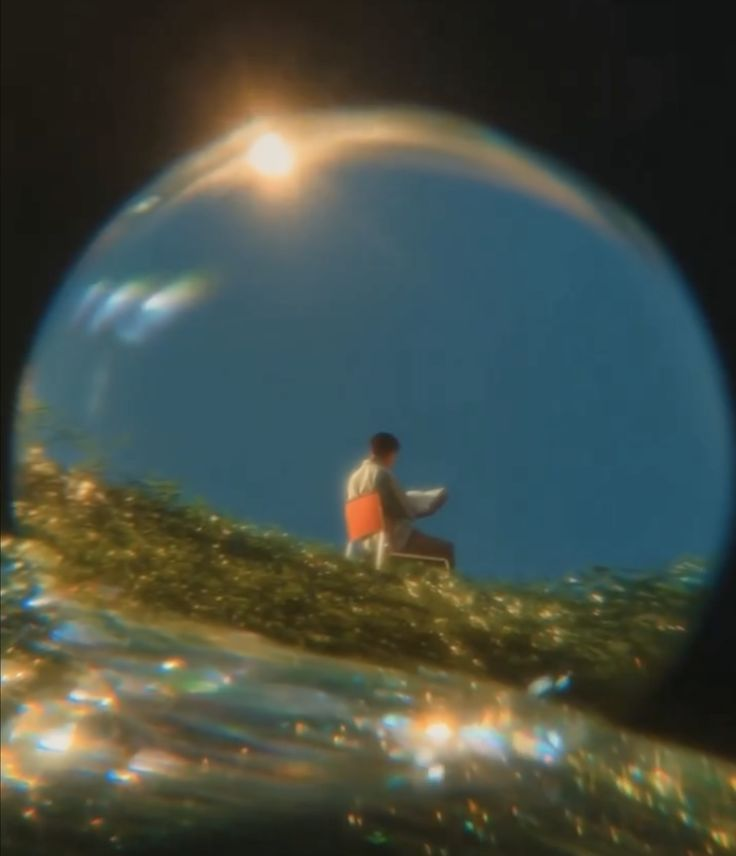
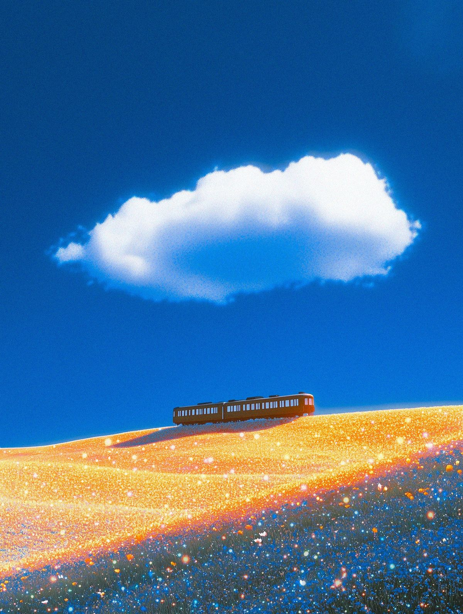
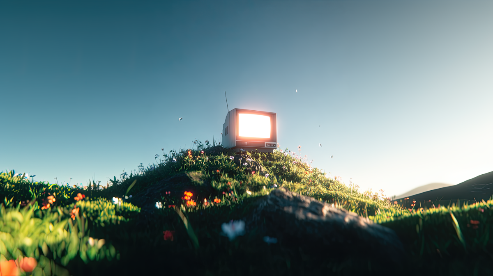

A personal AI built from your soul. Connect your platforms, discover your patterns, and meet the twin that finally knows you.
Your digital life is a trail of light — where you listen, build, watch, move. Twin.me reads it and finds the shape of you.

Perhaps we are searching— Rami
in the branches for what
we only find in the roots.
Your soul isn't in your résumé. It lives in the quiet data — what you replay at 2am, the rabbit holes, the songs on repeat. Twin.me listens where you actually are.

A five-layer personality portrait built from your real data — taste, rhythms, values, and voice.
Every observation from every platform, unified into one memory that compounds over time.
An AI twin that speaks from your signature — it knows your week, not just your name.

"It noticed I recover better on the nights I stop coding before midnight — and started protecting them."


The twin reads your week back to you — the patterns you'd never notice from the inside.

Every day you live, your twin reads another page. The signature deepens, the reflections sharpen — a year from now it knows you better than your calendar does.

Connect a few platforms and your soul signature takes shape in under 60 seconds.